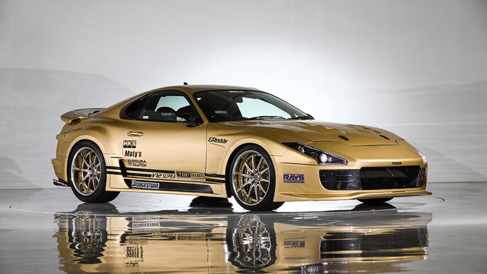
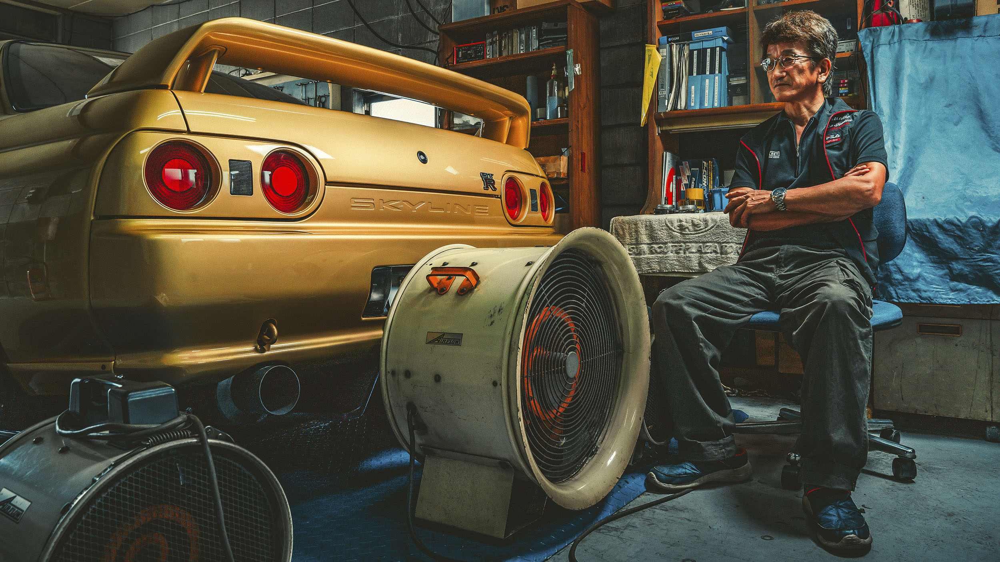

A história do Toyota Supra que atingiu velocidades extremas e resultou no banimento de seu condutor da Inglaterra é um dos episódios mais icônicos da cultura automotiva mundial, protagonizada pelo japonês Kazuhiko “Smokey” Nagata, fundador da Top Secret, uma das mais famosas oficinas de tuning do mundo.
No dia 4 de novembro de 1998, por volta das 4h da manhã, Smokey Nagata decidiu testar os limites do seu Toyota Supra altamente modificado na rodovia A1(M), ao norte de Londres. O carro, pintado de dourado e equipado com um motor Nissan RB26DETT (originalmente usado no Skyline GT-R), possuía cerca de 1.000 cavalos de potência. Nagata realizou um burnout no meio da estrada, aqueceu os pneus e partiu para sua corrida, com o objetivo de atingir mais de 300 km/h (cerca de 200 mph).
Naquele momento, Nagata não sabia que seu feito seria registrado por uma equipe de vídeo e se tornaria viral, nem que seria parado pela polícia britânica. Segundo relatos, ele chegou a marcar até 194 mph (aproximadamente 312 km/h), embora algumas fontes citem valores ainda mais altos. O fato é que ele estabeleceu o recorde não oficial de maior velocidade já atingida em uma rodovia pública do Reino Unido.

A polícia rapidamente interceptou Smokey Nagata após a corrida. Como consequência, ele foi preso, passou uma noite na cadeia e, após ser liberado, foi banido do Reino Unido por 10 anos, além de ter sua carteira internacional suspensa por um mês e pagar uma multa de £155 mais custos judiciais de £35. O episódio, longe de arruinar sua reputação, transformou Nagata em uma lenda do tuning e alavancou a fama da Top Secret, atraindo clientes de todo o mundo.
O objetivo de Smokey Nagata sempre foi ir além dos limites. Após o episódio na Inglaterra, ele construiu um novo Supra, desta vez equipado com um motor V12 5.0 litros do Toyota Century, turbinado, buscando atingir 400 km/h (248 mph). Esse carro foi levado para pistas fechadas, como o Nardò Ring, na Itália, onde chegou a 358 km/h, e posteriormente ao túnel Aqua-Line, no Japão, onde atingiu 370 km/h. O sonho dos 400 km/h em vias públicas permaneceu, mas o feito na Inglaterra foi marcante justamente por ter sido realizado em uma rodovia aberta ao público.
Essa ação é irreversível.